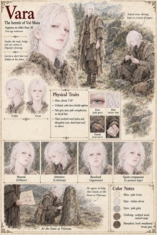
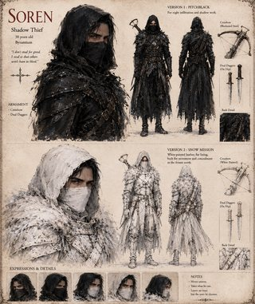
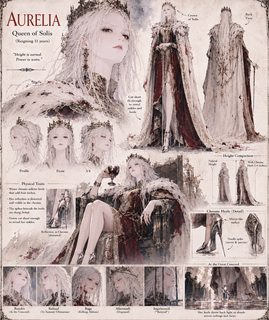

Vara
The hermit of Val Muta · looks no older than thirty · true age unknown
One person, two subject pages: the author confirms that the Vara of Case 0202 and the Vara of Case 0277 are the same man. Each case keeps its own page and sheet.
Shares a case with Higaide (Case 0202); Hildegund (Case 0277)
Appears in

Higaide
Tomobe no Higaide · Captain of the Left Gate Guard of Himuro, Sixth Rank (lower grade) · 34 at the opening, 53 at the close · called Higa, Lo Higa, the Moon-Man, the Dead Man of the Doorstone, the Eastern Angel and Saint Two-Swords
Shares a case with Vara (Case 0202)
Appears in

Hildegund
Princess of Vahlreth, later Queen Hildegund the First · seventeen on the night of the fall, twenty-six when she walks back up the north road, thirty at her crowning · carrier of the Hereditary Marker · keeps a private ledger of what she owes
Shares a case with Vara (Case 0277)
Appears in

Soren
Shadow thief · 38 years old · of Byzantium


Aurelia
Queen of Solis · reigning eleven years